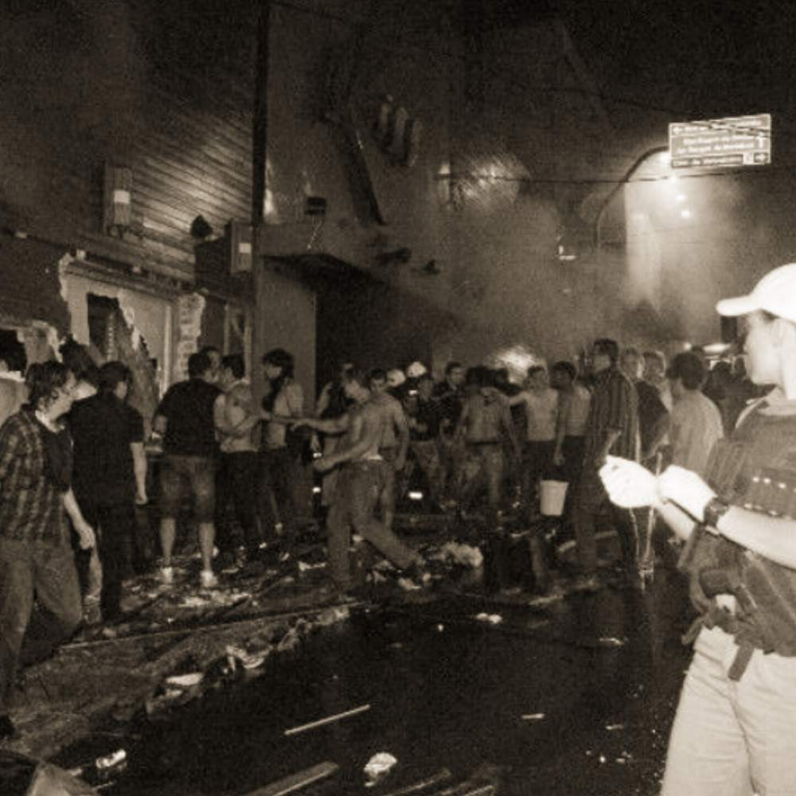

Tragédia: Boate Kiss
Dom. 27 de Janeiro de 2013
Na madrugada de 27 de janeiro de 2013, um incêndio na boate Kiss, em Santa Maria, no interior do Rio Grande do Sul, matou 242 pessoas e feriu mais de 600, a maioria jovens. O incêndio foi causado por um sinalizador disparado por um dos músicos da banda que tocava na casa noturna.
Entre as causas do incêndio estavam as condições precárias do estabelecimento e a falta de comunicação entre os profissionais da segurança. Os empresários Elissandro Spohr e Mauro Hoffman, sócios da casa noturna, foram colocados sob custódia da polícia. O guitarrista Rodrigo Martins e o baterista Eliel de Lima falaram com exclusividade à Globo. Eles contaram que tinham sido contratados pela banda há menos de um ano, não gostavam dos fogos de artifício usados durante os shows e que encontraram grande dificuldade para sair da boate. Segundo os bombeiros uma única porta de saída seria o suficiente para 691 pessoas, mas havia suspeitas de que havia muito mais gente no local.
Em entrevista ao Memória Globo, César Menezes, repórter de São Paulo, enviado ao local, lembrou: “O incêndio na boate Kiss foi a cobertura mais chocante e mais pesada da minha carreira. Chegou sem aviso, como todo grande factual. Ninguém esperava que o dia seguinte fosse mais fácil, mas bastou sair do hotel para sentir o tamanho da dor que o incêndio tinha deixado, não havia vozes nas ruas. Quem não estava chorando, estava em silêncio, olhando para o chão. A cidade era pequena e todo mundo – todo mundo mesmo – foi atingido: não havia quem não tivesse perdido alguém querido”.
is Death coming for you now?